Snakes of Dominican Republic
28 snake species are recorded in the Dominican Republic in SnakeList: 0 venomous and 28 non-venomous, from 5 families.
- 28species
- 28non-venomous
- 5families
These totals count the snakes SnakeList records as living in the Dominican Republic. A species counts if it is recorded anywhere in the country, so not every snake lives in every region.
Species
Showing 28 species
- No photo yetBahoruco BlindsnakeTyphlops eperopeus
- No photo yetBarahona Worm SnakeTyphlops syntherus
- No photo yetBarreras Fanged SnakeIaltris agyrtes
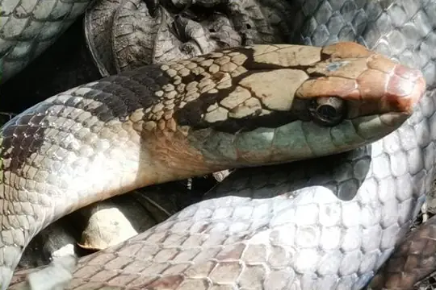
Brown Fanged SnakeIaltris dorsalis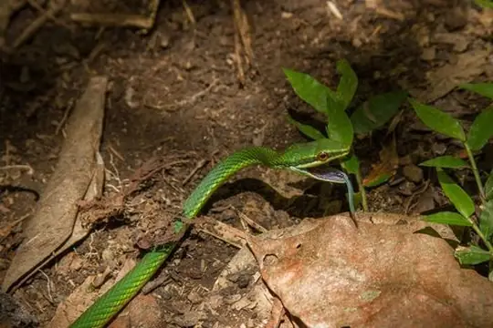
Catesby's Pointed SnakeUromacer catesbyi Cope's Antilles SnakeHypsirhynchus parvifrons
Cope's Antilles SnakeHypsirhynchus parvifrons Earthworm Blind SnakeTyphlops lumbricalis
Earthworm Blind SnakeTyphlops lumbricalis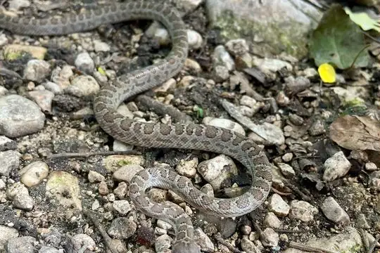
Ford’s BoaChilabothrus fordii Haitian Boa (striatus)Chilabothrus striatus
Haitian Boa (striatus)Chilabothrus striatus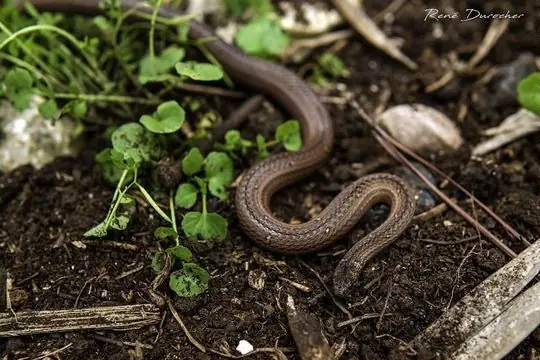
Haitian Ground SnakeIaltris haetianus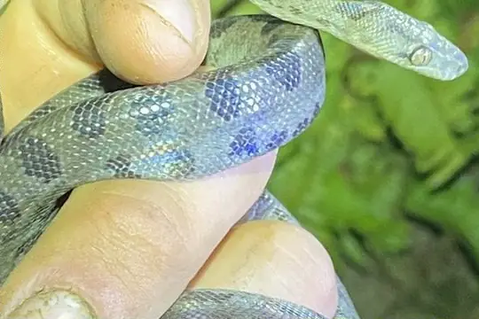
Hispaniola BoaChilabothrus gracilis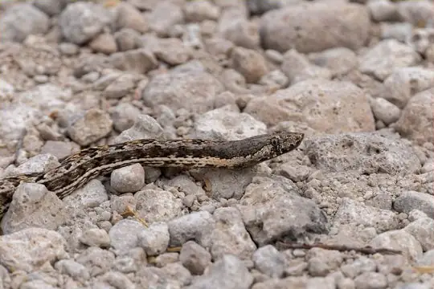
Hispaniola Cat-eyed SnakeHypsirhynchus ferox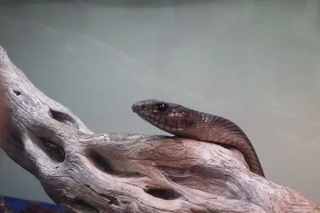
Hispaniola RacerHaitiophis anomalus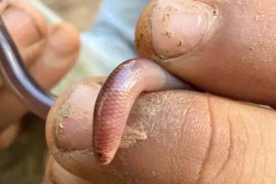
Hispaniola Worm SnakeTyphlops pusillus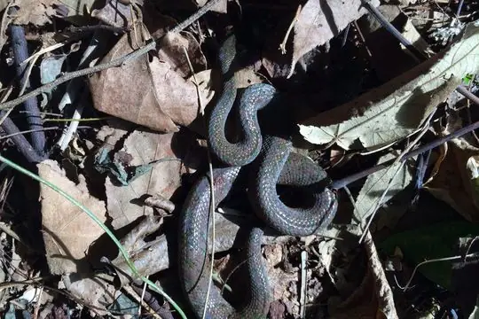
Hispaniolan TropeTropidophis haetianus- No photo yetHispaniolan Vine BoaChilabothrus ampelophis
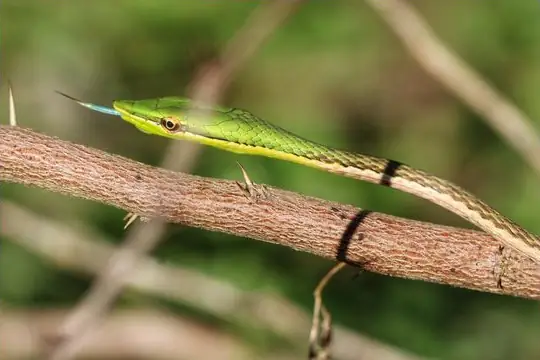
Island Pointed SnakeUromacer frenatus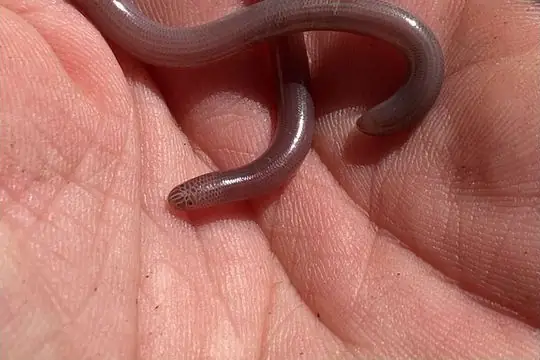
Island Worm SnakeTyphlops sulcatus- No photo yetLa Selle BlindsnakeTyphlops proancylops
- No photo yetLa Vega RacerHypsirhynchus melanichnus
- No photo yetMartin Garcia ThreadsnakeMitophis asbolepis
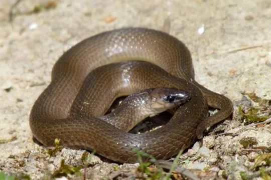
Pointed SnakeUromacer oxyrhynchus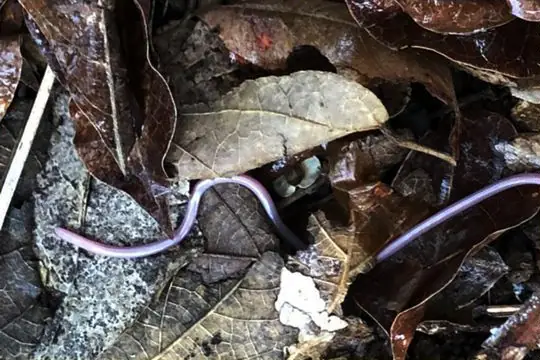
Samana ThreadsnakeMitophis calypso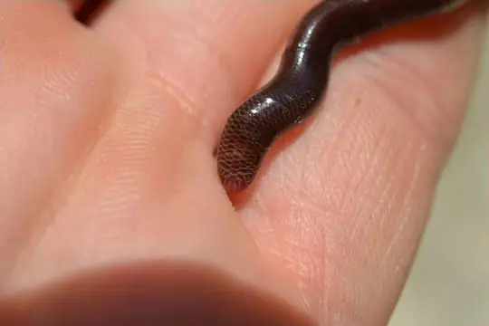
Schwartz' Worm SnakeTyphlops schwartzi- No photo yetThomas' Blind SnakeMitophis pyrites
- No photo yetThomas' Worm SnakeTyphlops hectus
- No photo yetTiburon Hognosed RacerHypsirhynchus scalaris
- No photo yetTitan Worm SnakeTyphlops titanops
No snakes in Dominican Republic match.
Dominican Republic’s snakes in numbers
- Families: Colubridae 11, Typhlopidae 9, Boidae 4, Leptotyphlopidae 3, Tropidophiidae 1.
- 6 are recorded in no other country in SnakeList: Bahoruco Blindsnake, Barreras Fanged Snake, Hispaniolan Trope, Hispaniolan Vine Boa, Martin Garcia Threadsnake, Schwartz' Worm Snake.